在“TeX释疑”里我们遇到这个公式：

我说是这样打出来的：
$$\sum_{p\rm\;prime}f(p) = \int_{t>1}f(t)d\pi(t).$$
其实为了避免引起不必要的复杂，我撒了一个谎 :) 你用这个方法输入的公式其实是这个样子：
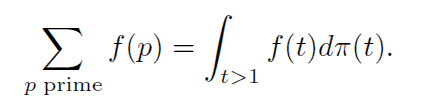
看不出区别吗？仔细看着 f(t) 和 dPi(t) 之间的间隔，是不是小了一点？
上面的公式其实少了一个地方，它本来应该是：
$$\sum_{p\rm\;prime}f(p) = \int_{t>1}f(t)\,d\pi(t).$$
"\," 是一个 thinspace, 如果没有它 f(t) 和 dPi(t) 就会靠的太近，\, 的大小是 1/6 quad, 一个 quad 的长度跟字体大小有关系，是一个 "M" 的宽度(1em)。看到了？TeX 的公式是非常考究的，有时你必须自己手动调整公式里字符的间距，否则你的公式就只是 99% 的完美，而不是 100%.
还有一种情况，双重积分号如果这样输入：
$$\int\int_D dx\,dy$$就会变成这样：
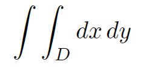
显然那两个弯离得太远。你应该这样输入：
$$\int\!\!\!\int_D dx\,dy$$结果才会是你想要的：
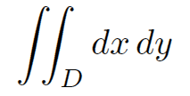
两个积分号之间距离减少了3个thinspace. 因为 \! 就是 -1/6 quad.
另外，花括号也需要特别注意: 如果表示一个序列，你可以这样写：
$\{1,2,\ldots,n\}$
结果是正确的:
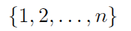
但是，如果你想把一个集合

用这种方法打出来:
$\{x\mid x>5\}$
就会得到这种结果：
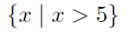
因为中间的 "|" 两旁有比较大的间隙，花括号两端里面的空间显得小了点。用 \, 在两端加上 thinspace 就更加好看了。
如果你想用
$|-x|=|+x|$
表示
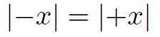
其实你得到的是
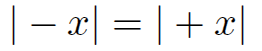
因为 TeX 实际上不理解数学，它认为你想把 "|" 和 "x" 相加减，结果在它们之间插入了过多的空间。为了消除这个误解，你必须说：
$\left|-x\right|=\left|+x\right|$
\left 和 \right 告诉 TeX，"|" 是一个分界符而不是一个操作数。这是对付一台“试图变得聪明的电脑”的小窍门。
看到这些你是不是觉得“怎么TeX并不是我想象中的那么聪明？”对。TeX 绝对没有你聪明，机器就是机器，它其实不理解数学。在这种时候只有人的判断才是正确的。
其实这只是一个视觉才能感受到的东西，你不可能记住所有这些。开始时你不用过于专心于这些细节，当你发现一个公式看起来确实有问题时才去做这些细节的调整。久而久之你就会积累很多经验，直接就可以得到最好的效果。
想一想应该怎样输入以下公式？特别注意间隔。
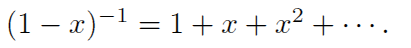
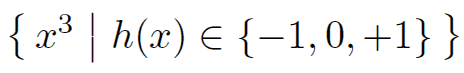
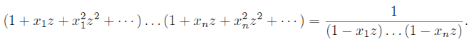
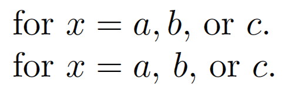
一个 TeX 的初学者可能会打出这样的公式：
for $x = a, b$, or $c$.这样的结果是图中上面那一个。 比较一下下面的那个，它是这样打出来的：
for $x = a$, $b$, or $c$.
第一种作法中，逗号被作为了公式中的逗号，就像 "f(a,b)" 里的；而第二种写法中，逗号被作为了文章里的普通逗号，这两种逗号是不同的。公式里的逗号后面的间距比文章里的要小，这样第一个公式里出现两种不同大小的间隔，这是很不好看的。
而且公式里的逗号处不可能被断行，因为你明显不希望 "f(a,b)" 这样的结构被自动分开。这样第一个公式的逗号处不可能被断开，这会影响断行的效果。在这个句子里，那个逗号明显应该是文章中的普通逗号，它不应该在数学公式里，所以第二种做法才是完全正确的。
实际上 100% 完美的做法应该是这样：
for $x = a$, $b$, or~$c$.
加了一个 "~". "or" 和 "$c$" 在断行时不应该被分断，这样你的文章看起来逻辑才会联贯。要是那个 "$c$" 出现在一行的开头，读者的注意力很容易被分散。
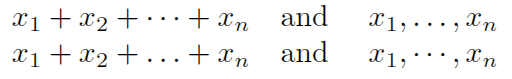 看到上面两行有什么不同吗？它们是分别用以下两行打出来的。
$x_1+x_2+\cdots+x_n$\quad and \quad $x_1,\ldots, x_n$
$x_1+x_2+\ldots+x_n$\quad and \quad $x_1,\cdots, x_n$
哪一行好看一些？当然是上面的了，通常应该把 \cdots 用在 +,-,= 这类“高脚符号”之间，而把 \ldots 用在逗号这样的“矮子” 符号之间。不幸的是我发现很多书籍错用了这两种符号，或者是因为 它的作者使用的程序无法区分这两种符号。
看看下面这些情况应该用哪个标点？
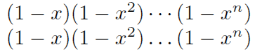
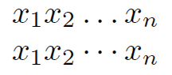